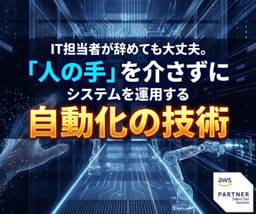

シー・エス・エス イノベーションラボ（ブログ）
https://blog.css-net.co.jp/
シー・エス・エス イノベーションラボ（ブログ）
フィード
「社内情報の検索」に時間がかかっていませんか？自社専用のAI検索システムを作る
シー・エス・エス イノベーションラボ（ブログ）
「あの資料どこ？」という探し物の時間をゼロに。中規模製造業のDXを加速させる、Amazon KendraとAmazon Bedrockを活用した「自社専用AI検索システム（RAG）」の構築法を解説します。社内のナレッジを資産に変え、業務効率を劇的に向上させる最新アプローチとは。
2日前

IT担当者が辞めても大丈夫。「人の手」を介さずにシステムを運用する自動化の技術
シー・エス・エス イノベーションラボ（ブログ）
中規模製造業の経営層の皆様、IT人材不足や業務の属人化にお悩みではありませんか？人材採用が困難な今、シー・エス・エスは「人を雇わず、クラウド機能で業務を代替する」実利的な解決策をご提案します。
6日前

災害発生時、翌日には業務再開できますか？低コストで実現する「会社のデータの守り方」
シー・エス・エス イノベーションラボ（ブログ）
1. 製造業を襲う2つの脅威：自然災害とランサムウェア 2. AWS BackupとS3 Glacierが変える「守り」の常識 3. なぜ「シー・エス・エス」が選ばれるのか：金融品質の技術力 ① 50年間、一度の失敗も許されない「金融・証券システム」を完遂 ② 「実利主義」に基づく自社SaaSの運用実績 ③ 上流工程から一貫してサポートする「課題解決力」 まとめ：データは「過去の記録」ではなく「未来の資産」 この記事を書いた人 こんにちは！デジタル・マーケティング部の山内です。 「もし今日、大規模な地震が発生したら？」「もし明日、基幹システムがランサムウェアに感染したら？」中規模製造業を営む経…
10日前
初めてのAWS移行。「とりあえずクラウド化（リフト）」の後に待つ落とし穴と回避策
シー・エス・エス イノベーションラボ（ブログ）
木造旅館（オンプレ）から高層ビル（クラウド）へ。単なる「引越し」で終わらせていませんか？製造業のクラウド移行に潜む「コスト・運用・DX停滞」の3つの落とし穴を、老舗旅館の例えで分かりやすく解説。金融システムで培った確かな技術力で、貴社のシステムを「次世代の武器」に変える移行ロードマップを公開します。
23日前
適正な発注のコツは需要予測にあり。データ分析で在庫のリスクを回避する実利的な手法
シー・エス・エス イノベーションラボ（ブログ）
製造現場の「勘」が外れる要因をデータで分析。過剰在庫や欠品リスクを抑え、キャッシュフローを改善するための具体的な需要予測の手法（時系列分析・回帰分析・機械学習）を分かりやすく解説します。データ分析を「机上の空論」で終わらせず、現場で稼ぐための武器にするための条件とは。
23日前
【2026年最新】データ分析基盤の構築でAWS・Azure・GCPをどう選ぶ？失敗しないクラウド選定の新基準
シー・エス・エス イノベーションラボ（ブログ）
データ分析基盤の構築で、自社に最適なクラウドはどれか？主要3大クラウド（AWS、Azure、Google Cloud）の特性をビジネス視点で徹底比較。50年の実績を持つCSSグループが、失敗しないための「選定の新基準」を解説します。
1ヶ月前
【DXはスモールスタートが正解】数百万円のツールは不要！小さく始めて大きく育てる「データ活用」
シー・エス・エス イノベーションラボ（ブログ）
「高いツール＝分析できる」は誤解です。数百万円をかける前に、手元のExcelと無料のPythonで始める「スモールスタート」が正解。転記作業の自動化からAI予測まで、コストをかけずに確実な成果を出す「3つの活用術」を解説します。
1ヶ月前
サーバー保守期限は「進化」の合図：AWS移行成功のチェック項目
シー・エス・エス イノベーションラボ（ブログ）
なぜ今、オンプレミスからAWSへの移行が選ばれているのか AWS移行を成功させるための必須チェック項目 1. 現状把握と「移行パス」の決定 2. セキュリティとガバナンスの設計 3. コストと運用体制の見直し パートナー選びで決まる「移行の質」 保守期限は「進化」の合図です この記事を書いた人 こんにちは！デジタル・マーケティング部の山内です。 「サーバーの保守期限がいよいよ迫ってきたけれど、何から手をつければいいのかわからない」「クラウド移行、特によく聞くAWSへの移行って本当に安全なの？」と、不安や焦りを感じているシステム担当者の方は多いのではないでしょうか。 経済産業省が警鐘を鳴らした「…
1ヶ月前
Tableauで作る「経営のコックピット」——数字の羅列を「直感的な気付き」に変えるダッシュボード活用術
シー・エス・エス イノベーションラボ（ブログ）
経営判断を早めるTableau（タブロー）ダッシュボードの作り方を解説。Excelの数値管理から脱却し、異常を即座に検知する「コックピット経営」とは？製造業の事例を交え、アラート機能やドリルダウン、Zの法則など、今すぐ使える3つの画面設計テクニックを紹介します。
1ヶ月前
Databricksで実現する「データレイクハウス」〜「データがバラバラで使えない」を終わらせる、次世代の統合基盤〜
シー・エス・エス イノベーションラボ（ブログ）
こんにちは！デジタル・マーケティング部の神子です。 多くの企業でDXが進む中、特に建設・不動産業界でネックとなるのが「データの保管場所がバラバラ」という問題です。 現場のデータ（写真・図面）と経営データ（売上・原価）が分断されているため、「図面と収支を掛け合わせて分析したい」と思っても、正確な分析ができず、結局は担当者の勘に頼ってしまう――。 今回は、こうした課題を解決する新しい管理構造「データレイクハウス」と「Databricks」について解説します。集めるだけの管理から使える管理へ。自社のデータ戦略を見直すきっかけにしてみてください。 データの「サイロ化」と二者択一の限界 次世代の解「レイ…
2ヶ月前
フロントエンドエンジニアの思考回路 ー AIで高める、「モック」の精度 ー
シー・エス・エス イノベーションラボ（ブログ）
こんにちは。テクノロジー・コンサルティング課のたです。 最近、提案フェーズで「AIを使ってモックを作る」場面が増えてきました。スピードも完成度も上がる一方で、きれいだけど議論が進まない／作りすぎて余白がなくなる、という違和感を感じることもあります。 この記事では、提案活動におけるモック開発を題材に、AIを活用しつつも人間の思考と判断を中心に据えるための進め方を、現時点の整理としてまとめます。（※案件やチームによって最適解は変わります。） i セキュリティ要件を確認しましょう 実務では、案件や現場のガイドラインで許可された範囲のツールだけを使うことになります。場合によっては「AIを使わない」判断…
2ヶ月前
スライドを一瞬で生成！Geminiキャンバスで実現する次世代AI活用術
シー・エス・エス イノベーションラボ（ブログ）
みなさんこんにちは。入社2年目、プロダクトサービス事業部のハニーです。 Geminiの進化が止まりません！ Googleが開発するAI「Gemini」は、テキストだけでなく画像やコードまで扱える万能アシスタントです。今回そのGeminiの「キャンバス機能」にスライド作成機能が追加されたということで試してみました！ 「スライド作成、もっと楽にならないかな…」 そんな全社会人の願いを叶えてくれるかもしれないこの機能。実際に使ってみてどこまでできるのか、使い心地はどうなのかをレポートします！ 1. 「Geminiキャンバス」の新機能！スライド作成とは？ 2. 実際にスライドを作ってみた 3. 便利な…
2ヶ月前
Excel経営の賞味期限：計算式のミスが招く「1億円の損失」を防ぐデータ統合の第一歩
シー・エス・エス イノベーションラボ（ブログ）
こんにちは！デジタル・マーケティング部の神子です。 日々の業務で当たり前のように開いているExcel。 しかし、今あなたが使っているそのExcelファイルは、実はいつ爆発してもおかしくない「時限爆弾」かもしれません。「複雑なマクロは作った本人しか分からない」「計算式が1行ズレていた」その些細なミス一つが、企業の利益を大きく損なう事態に直結しかねません。 しかし、リスクは感じつつも、現場からExcelを完全になくすのは現実的ではない……というのが本音ではないでしょうか。 そこで本記事では、「現状維持」でも「脱Excel」でもない、第3の選択肢をご提案します。現場の使い勝手はそのままに、経営数字を…
2ヶ月前
AWS re:Invent 2025「Frontier Agents」衝撃の余波 ～「運用監視」が消える日、金融システム運用はどう変わるか～
シー・エス・エス イノベーションラボ（ブログ）
こんにちは！デジタル・マーケティング部の山内です。2025年、ラスベガスで開催された「AWS re:Invent」。世界中の技術者が固唾を飲んで見守る中、発表されたのは単なる新機能ではありませんでした。それは、私たちが長年慣れ親しんできた「システム運用」という概念そのものを過去のものにするかもしれない、衝撃的なイノベーション——「Frontier Agents（フロンティア・エージェント）」の登場です。「運用監視の仕事が、なくなるかもしれない」。この言葉を聞いて、背筋が凍る思いをしたインフラエンジニアや運用管理者は少なくないでしょう。しかし、これは遠い未来のSFの話ではありません。AWSが発表…
3ヶ月前
【AWS】ECS on Fargate 検証してみた！
シー・エス・エス イノベーションラボ（ブログ）
こんにちは、TC部所属のN.Nです。 AWSのコンテナサービスであるECSについて、「基本的な仕組み」と「最低限の構築手順」を試しました。検証してみてわかったことをまとめましたので、参考になれば幸いです。 ECSはコンテナを簡単に実行・管理できるサービスです。 これは、コンテナ実行環境の管理負担を、軽減したい場合に有効です。（ECSでは、コンテナの配置やスケーリング、ヘルスチェックなどが自動化されるため、コンテナ実行環境のインフラ運用にかかる、負担軽減が期待できます。） この記事はこんな方におすすめです。 コンテナってそもそもなに？ AWSは触ったことがあるが、ECSは初めて ECSの基本的な…
4ヶ月前
【徹底比較】ノーコードとローコード 自社に最適なのはどっち？
シー・エス・エス イノベーションラボ（ブログ）
こんにちは！デジタル・マーケティング部の山内です。DX推進やIT人材不足が社会課題として続く中、多くの企業が内製化に舵を切り、変化に迅速に対応できる体制づくりに重点を置いています。そしてその中核となっているのが「ノーコード（No-code）」や「ローコード（Low-code）」といった開発手法です。これらは、もはや新しい概念ではなく、多様な業界・規模で活用が定着した標準的なアプローチとなりました。特にローコード開発は、最小限のソースコード記述によりノーコード開発と比べ高い柔軟性を実現し、IT部門や現場スタッフが協働して業務システムやアプリケーション開発を行うための強力な選択肢となっています。し…
4ヶ月前
RAG検証 - RAGの回答精度を最大化するための技術要素を検証 -
シー・エス・エス イノベーションラボ（ブログ）
こんにちは！入社2年目、プロダクト・サービス事業部のハニーです！ みなさんは RAG（Retrieval-Augmented Generation） をご存じでしょうか？これは、ChatGPTのような生成AIを「自社の専門家」のように進化させられる技術です。「社内情報に基づいて正しく答えてほしい…」そんなニーズを解決してくれるのがRAGなんです。 私たちはRAGシステムの開発を見据えて、RAGの回答精度を最大化するにはどんな技術要素が鍵になるのかを検証してきました。本記事では、RAGの回答精度を高めるために取り組んできた私たちの試行錯誤をご紹介します。 1. RAGとは 2. 社内での検証 2…
5ヶ月前
Next.js におけるレンダリングを理解する
シー・エス・エス イノベーションラボ（ブログ）
こんにちは、テクノロジー・コンサルティング課のゴマ太郎です。 今回は Next.js におけるレンダリングについて調査しましたのでここで共有できればと思います。 1. はじめに 2. 初回レンダリングの順序 3. 再レンダリングの条件とタイミング 4. Server Components と Client Components の連携 Server Components から Client Components へ Client Components 内で Server Components を利用する 5. レンダリングの使い分け 6. まとめ この記事を書いた人 1. はじめに今回は Ap…
5ヶ月前
問い合わせ対応の属人化から脱却へ。GoogleのAI「NotebookLM」と挑む業務改善
シー・エス・エス イノベーションラボ（ブログ）
1. はじめに 2. 今回使用するツール「NotebookLM」とは？ 3. 私たちのチームが抱えていた「問い合わせ対応」の課題 4. 検証中！ NotebookLM活用ステップ 5. 検証から見えてきた「可能性」 6. 今後の課題と展望 7. まとめ この記事を書いた人 1. はじめに こんにちは！Qube開発チームのクワです。 最近、生成AIを活用したチャットボットによるお問い合わせ対応の効率化がトレンドになっています。 私たちもその流れに乗り、「生成AIを利用したお問い合わせ業務の削減」に挑戦してみることにしました。 この記事では、Googleが開発した「NotebookLM」を使い、私…
5ヶ月前
AIコーディング支援ツール徹底比較！GitHub Copilot vs. Cursor、あなたのチームに最適なのはどっち？（後編）
シー・エス・エス イノベーションラボ（ブログ）
検証エンジニア 徹底比較！6つの評価項目で見る実力（後編） 可読性・保守性［検証項目4］ コードレビュー支援［検証項目5］ チーム管理とセキュリティ［検証項目6］ 結論 「GitHub Copilot」はこんなチームにおすすめ！ 「Cursor」はこんなチームにおすすめ！ この記事を書いた人 【前編】では、2つのAIコーディング支援ツール「GitHub Copilot」と「Cursor」の基本的な性能として、「開発コスト削減効果」「操作性」「コード提案の正確性」を比較しました。性能面ではCursorが僅かにリードしていましたが、ツールの選定は個人の開発効率だけで決まるものではありません。 今回…
6ヶ月前
AIコーディング支援ツール徹底比較！GitHub Copilot vs. Cursor、あなたのチームに最適なのはどっち？（前編）
シー・エス・エス イノベーションラボ（ブログ）
検証エンジニア エントリー紹介：注目のAIアシスタント 徹底比較！6つの評価項目で見る実力（前編） 開発コスト削減効果［検証項目1］ 操作性［検証項目2］ コード提案の正確性［検証項目3］ この記事を書いた人 ソフトウェア開発の世界では、AIの活用が急速に進んでいます。特に、コーディングを直接支援してくれるAIツールは、開発の生産性を劇的に向上させる可能性を秘めており、多くの開発者が注目しています。 しかし、「どのツールが本当に自社の開発プロセスに合うのか？」を見極めるのは簡単ではありません。そこで今回は、当社開発チームのエンジニア2名が2025年6月から8月にかけて、代表的な2つのツール「G…
6ヶ月前
ローカルLLMを使ってみた！- ミャーモと学ぶ、 オフラインで使えるAI環境構築にゃ！ -
シー・エス・エス イノベーションラボ（ブログ）
こんにちは！Qube開発チームのミャーモです。 今回は、「ローカルLLM」に挑戦してみました！ 大規模言語モデル（LLM）といえば、ChatGPTなどのクラウドサービスが有名ですよね。 でも、個人情報や社外秘のデータを扱いたい、インターネット接続なしでも使いたい、なんてときには「ローカルLLM」が便利なんです。 ▽Qubeについてはこちらから https://www.css-net.co.jp/qube 今回のミッションとモデル選定基準にゃ！ ローカルLLM環境の構築（Ollama編）にゃ！ 実際にLLMを使ってみるにゃ！ 処理速度とメモリ使用量を測ってみたにゃ！ 画面からはモデルのアンインス…
6ヶ月前
【Amazon AppStream 2.0 実践ガイド】最小ステップでアプリケーション配信環境を構築！
シー・エス・エス イノベーションラボ（ブログ）
AppStream 2.0とは 概要 特徴 基本構成の理解 構築してみよう 構築環境 AppStreamの最小構築手順 案件で分かった注意ポイント まとめ 参考サイト この記事を書いた人 こんにちは、TC部所属のN.Nです。今回は Amazon AppStream 2.0 について、実際の案件で構築してみてわかった「基本的な仕組み」と「最低限必要な構築ステップ」をまとめます。 AppStreamは、アプリケーションのみを配信できるサービスです。利用者にWindowsのデスクトップやOS設定を触らせたくない場合に特に有効で、アプリケーションのみ配信したい場合に活躍します。 この記事はこんな方にお…
6ヶ月前
【生成AI 8選】システム開発会社が明かす、提案書作成の生産性と質を劇的に向上させた生成AI活用術！【CSS事例】
シー・エス・エス イノベーションラボ（ブログ）
1.要件整理で使える生成AIサービス 2.市場調査・情報収集で使える生成AIサービス 3.構成編集で使える生成AIサービス 4.デザインを作成してくれる生成AIサービス 5.図やイラストを作成で使える生成AIサービス 6.レビュー・添削の際に使える生成AIサービス まとめ この記事を書いた人 こんにちは！デジタル・マーケティング部の山内です。 システム開発の現場で働く皆さん、提案書作成でこんな悩みはありませんか？ ✓ 顧客ヒアリング後、夜遅くまで提案書作成に追われる✓ 何度もレビューのやり直しで、なかなかプロジェクトが前に進まない✓ 質の高い提案書を作りたいが、時間と労力が膨大にかかってしまう…
6ヶ月前
RPAはAIエージェントに仕事を奪われるのか？！未来の自動化戦略
シー・エス・エス イノベーションラボ（ブログ）
RPAが得意なこと、AIエージェントが得意なこと RPAとAIエージェントの連携例 RPAとAIエージェントの導入ステップ まとめ：未来の自動化戦略を考える この記事を書いた人 こんにちは！デジタル・マーケティング部の山内です。最近よく耳にするようになった「AIエージェント」。これは、与えられた目標を達成するために、状況を自律的に判断し、計画を立てて実行するソフトウェアです。…これを聞いて、RPA（Robotic Process Automation）を思い浮かべた方もいるかもしれません。RPAと違って自律的に判断するのであれば、「AIエージェントのほうが性能が高く、RPAから置き換わる存在に…
7ヶ月前
【データプラットフォーム】データウェアハウスとデータレイクの役割を理解する
シー・エス・エス イノベーションラボ（ブログ）
データプラットフォームの種類を理解しよう！ それぞれのメリット・デメリット データウェアハウスとデータレイクの活用事例 データ活用の「土台」を理解し、次なるステップへ この記事を書いた人 こんにちは！デジタル・マーケティング部の山内です。業務を行う中で、「データ」を使用する、使用したことがある、そんな方も多いのではないでしょうか。近年では、ビッグデータやクラウド、AIなどの技術が急速に進化し、それに伴って企業が扱うデータの量は爆発的に増えています。加えて、データの形式や種類もますます多様化しており、この膨大で複雑なデータをいかに効果的に分析・活用できるかが、今や企業の成長を大きく左右する重要な…
7ヶ月前
行ってよかった！AWS Summit参加レポート
シー・エス・エス イノベーションラボ（ブログ）
会場の熱気と圧倒的な「AWSの人気」を体感！ AWS Summit！特に気になったブースは… ムムムの連続…AWS勉強中のエンジニアが見たセッションの壁 「分からなくても収穫あり」！参加して感じたAWS Summitの価値 1. 今のトレンド「生成AI」の勢いを肌で感じられたこと 2. AWSの汎用性や人気の高さを肌で感じることができたこと ＜おまけ＞AWS Summitでいただいたノベルティたち 最後に――AWSパートナー企業としての私たちの取り組み この記事を書いた人 こんにちは。デジタル・マーケティング部の山内です！ 先日、初めて「AWS Summit」に一般参加者として参加してきました…
8ヶ月前
2025年、給与が変わる？デジタル給与の仕組みと今後の展望
シー・エス・エス イノベーションラボ（ブログ）
デジタル給与とは？基本的な仕組みを解説 デジタル給与の対象となる決済サービスを提供する会社 デジタル給与の導入状況と市場動向 デジタル給与のメリット4選 利便性の向上 送金速度の向上 従業員満足度の向上 コスト削減と業務効率化（企業側） デジタル給与のデメリットと注意点 デメリット セキュリティリスク 注意点（企業側） 従業員への十分な説明と同意 残高の上限額 【事例紹介】デジタル給与を導入した企業の成功例 保険業界 通信業界 今後の展望 まとめ この記事を書いた人 こんにちは。デジタルマーケティング部の山内です！ ここ数年、特にコロナ禍以降、現金を使う機会がぐっと減ったという方も多いのではな…
9ヶ月前
生成AIの次はAIエージェントへ！社会を変える可能性と今知るべき基礎知識
シー・エス・エス イノベーションラボ（ブログ）
AIエージェントとは？ 生成AIとAIエージェント、何が違うの？ 生成AIは「生み出す」ことに特化 AIエージェントは「目標達成」に特化 AIエージェントの際立つ能力：業務効率化とコスト削減にとどまらない価値 AIがチームで働く時代へ：マルチエージェントシステムの力 具体的な活用事例 具体的な導入事例（企業における活用） 情報収集・分析の劇的な効率化 パーソナルな購買体験の実現 創造的なアイデア創出の加速 導入における課題と注意点 2025年以降のAIエージェント展望 まとめ この記事を書いた人 こんにちは。4月からデジタルマーケティング部に配属されました、山内です。 この部署に配属されてから…
9ヶ月前
新卒エンジニアの研修体験記｜Ruby on Railsで実践開発に挑戦！
シー・エス・エス イノベーションラボ（ブログ）
みなさんこんにちは。株式会社シー・エス・エス、プロダクト・サービス事業部の2年目、ハニーです。 プロダクト・サービス事業部は、主に自社プロダクト（Qube）の開発・運営や、新しい技術（特に生成AI）の研究開発・検証など、システム開発の枠を超えた幅広い技術・サービス領域を推進している部署です。今回は、私が入社1年目でこの部署に配属されてから行った、2か月間の研修についてお話ししたいと思います！ 最初の1ヵ月は、RubyとRuby on Railsの学習 Ruby Ruby on Rails 実践力を磨く！残り1か月はRuby & Ruby on Railsで開発演習 問題出題システムの作成 発表…
10ヶ月前